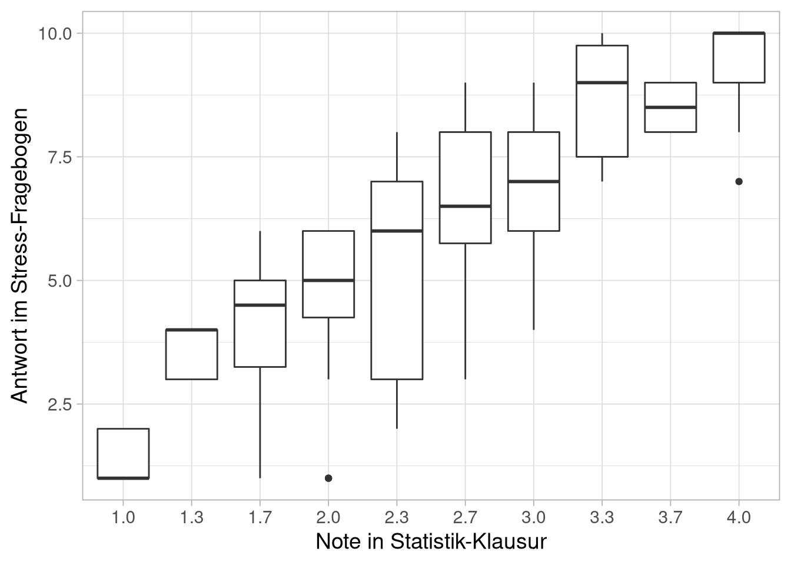

Experimentelles Vorgehen und Kausalschlüsse
Organisatorisches
Semesterplan
| Sitzung | Datum | Sitzungstitel |
|---|---|---|
| 1 | 02.11.2020 | Warum wissenschaftliche Psychologie |
| 2 | 28.11.2020 29.11.2020 | Hypothesen und der Prozess der Hypothesenprüfung |
| 3 | 28.11.2020 29.11.2020 | Experimentelles Vorgehen |
| 4 | 28.11.2020 29.11.2020 | Literaturrecherche |
| 5 | 28.11.2020 29.11.2020 | Operationalisieren und Messen |
| 6 | 12.12.2020 13.12.2020 | Experimentelle Versuchspläne |
| 7 | 12.12.2020 13.12.2020 | Störvariablen im Experiment |
| 8 | 12.12.2020 13.12.2020 | Nicht-experimentelle Versuchspläne |
| 9 | 12.12.2020 13.12.2020 | Material und Stichprobe |
| 10 | 23.1.2021 24.1.2021 | Auswertung, Darstellung und Interpretation |
| 11 | 23.1.2021 24.1.2021 | Ethische Probleme im Versuch |
| 12 | 23.1.2021 24.1.2021 | Publikationsprozess |
| 13 | wird noch bekannt gegeben | Vorstellung der Gruppenarbeiten |
| 14 | wird noch bekannt gegeben | Klausurvorbereitung |
Wiederholung
Prozess der Hypothesenprüfung

Abb. 6: In Anlehnung an Reiß and Sarris (2012)
Hypothesen
- Definition „Hypothese“
- Wie kommt man zu Hypothesen?
- Unsystematische vs. systematische Ansätze
- Rolle von Induktion und Deduktion
- Häufige Fehler bei der Generierung von Hypothesen
- Wie überprüft man Hypothesen (nicht)?
- Ungültige „Beweise“
- Prozess der wissenschaftlichen Hypothesenprüfung
- Bewertung von Hypothesen und deren Überprüfung
- Vorbedingungen für Überprüfbarkeit
- Qualitätskriterien für Hypothesen und deren Überprüfung
Grundidee des Experimentierens
Welche Merkmale definieren ein Experiment
Manipulation mindestens einer unabhängigen Variable
Kontrolle von (möglichst allen relevanten) Störvariablen
Messung mindestens einer abhängigen Variable
Kausalität
Warum lassen nicht-experimentelle Studien keinen Kausalschluss zu?
\[\text{Kausalität} = \text{Ursache-Wirkungs-Beziehung}\]
Beispiel:

Ein Forscher beobachtet, dass Studierende, die hohe Werte in einem Stress- Fragebogen angeben, schlechte Leistungen in der Statistik-Klausur zeigen und dass Studierende, die niedrige Werte im Stress-Fragebogen angeben, gute Leistungen in der Statistik-Klausur zeigen.
Beispiel zu Kausalschlüssen
Warum lassen nicht-experimentelle Studien keinen Kausalschluss zu?
Mögliche ‘Schlussfolgerung’ aus Ergebnissen:
Stress vermindert die Prüfungsleistung in Statistik.
Wer schlecht in Statistik ist, den stresst das Lernen für Statistik-Klausuren.

Wer viel jobbt ist sowohl schlechter in Statistik, als auch im allgemeinen gestresster.

Stress verschlechtert die Konzentration.
Schlechte Konzentration beeinträchtigt die Leistung

Stress beeinflusst nur die Leistung bei besonders komplexen Aufgaben, die dann aber auch die meisten Punkte bringen.
Beispiel zu Kausalschlüssen
](imgs/correlation.png)
](imgs/cell_phones.png)
Lösung: Experiment
Fall von eben

Ein Forscher beobachtet, dass Studierende, die hohe Werte in einem Stress- Fragebogen angeben, schlechte Leistungen in der Statistik-Klausur zeigen und dass Studierende, die niedrige Werte im Stress-Fragebogen angeben, gute Leistungen in der Statistik-Klausur zeigen.
Manipuliere unabhängige Variablen
- Stress
- Niedrig: Vor dem Test entspannen
- Hoch: Vor dem Test Vortrag halten
- Komplexität der Aufgabe
- Niedrig: Konzentrationsaufgaben (d2 durchstreichen)
- Hoch: Statistik-Aufgaben
Kontrolliere Störvariablen
Jobben (in h/Woche) — randomisieren
Statistik-Kenntnisse (Note im 1. Semester) — randomisieren
Geschlecht (w/m) — parallelisieren (Blockbildung)
Reihenfolge der Aufgaben — Ausbalancierung
Messe abhängige Variablen
- Leistung
- Anzahl korrekte Lösungen
- Antwortlatenzen
Design:
| Komplexität | |||
| niedrig | hoch | ||
| Stress | niedrig | ||
| hoch | |||
| Komplexität | |||||
| niedrig | hoch | ||||
| Stress | niedrig | m | f | m | f |
| hoch | m | f | m | f | |
| Komplexität | |||||
| niedrig | hoch | ||||
| Stress | niedrig | steigende Schwierigkeit | steigende Schwierigkeit | ||
| hoch | sinkende Schwierigkeit | sinkende Schwierigkeit | |||
| niedrig | steigende Schwierigkeit | steigende Schwierigkeit | |||
| hoch | sinkende Schwierigkeit | sinkende Schwierigkeit | |||
experimentelle vs. nicht-experimentelle Studien
| Nicht-experimentelle Studien | Experimentelle Studien |
|---|---|
| Vermutete Ursachen nur gemessen | Ursachen werden erzeugt |
| Zeitliche Reihenfolge oft unklar | Ursache kommt vor Wirkung |
| Störvariablen nur messbar (\(\neq\) Kontrolle) | Gute Kontrolle von Störvariablen |
| unbekannte Störvariablen nie kontrollierbar | z.T. auch unbekannte Störvariablen kontrollierbar |
| Kausalschluss nicht möglich | Kausalschluss möglich |
| Meist möglich | Nicht immer möglich (praktisch, ethisch) |
| Eher natürliches Setting | Eher künstliches Setting |
Gruppenarbeit
Gibt’s im Olat.
Personen im Experiment
Versuchsleiter (VL)
- Synonym: Experimentator (experimenter)
Versuchsperson
Synonyme: Proband (subject), Teilnehmer (participant)
Manchmal auch Versuchstiere (subject, test animal)
Variablen im Experiment
unabhängige Variable (UV)
- Synonyme: independent variable, Behandlung (treatment), Faktor (factor), Bedingung (condition)
- \(\rightarrow\) Variable, die vom Experimentator aktiv verändert, variiert, manipuliert wird
abhängige Variable (AV)
- Synonyme: dependent Variable, primary and secondary outcome
- \(\rightarrow\) Variable, bei der der Effekt der UV beobachtet werden soll
Störvariable
- Synonyme: extraneous variable, confounding variable
- \(\rightarrow\) Variable, die (vermutlich) ebenfalls die AV beeinflusst, deren Wirkung im Experiment neutralisiert (=kontrolliert) werden soll, weil sie den Effekt der UV stören würde.
- Keine Kontrolle \(\rightarrow\) Konfundierung von UV und Störvariable
- Mediatorvariable
- mediiert (vermittelt als Zwischenglied die Wirkung von UV auf AV
- \(\rightarrow\) Ohne Mediator keine Wirkung von UV auf AV
- Moderatorvariable
- moderiert (verändert) die Art der Wirkung von UV auf AV
- \(\rightarrow\) Unterschiedliche Wirkung der UV je nach Ausprägung des Moderators
- Mediatorvariable
Typen von Studien / Experimenten
Typen von Studien
Experimente
- UV kann wirklich manipuliert werden, SV können kontrolliert werden
- z.B. UV: Verum vs. Placebo, AV: Depressivität, SV: randomisiert, doppelblind, Crossover
Quasiexperimente
- Störvariablen können nicht richtig kontrolliert werden
- z.B. Vergleich verschiedener Lehrmethoden mit gegebenen Schulklassen
Ex-Post-Facto-Studie
- UV kann nicht manipuliert, sondern nur gemessen werden
- Z.B. Vergleich von Patienten vs. Gesunden hinsichtlich Gedächtnisleistung
Nichtexperimentelle Studien
- UV wird nicht manipuliert, Störvariablen (so gut wie) gar nicht kontrolliert
- z.B. Längsschnittstudien zur Entwicklung des Gedächtnisses z.B. Querschnittstudien zum Zusammenhang von X und Y
Kategorisierung von Studien
Einteilung nach dem „Ort“
- Laborexperiment
- gute Kontrolle von Störvariablen, u.U. schlechte Generalisierbarkeit
- Feldexperiment
- schlechte Kontrolle von Störvariablen, gute Generalisierbarkeit
- \(\neq\) nichtexperimentelle Feldstudie (z.B. „Anwendungsbeobachtung“)
Spezielfall: online-Studien
Vorteile
Großes N mit geringem Aufwand
Kein Versuchsleiter \(\rightarrow\) Keine Versuchsleitereffekte
Standardisierung von Instruktionen und Ablauf
Jederzeit durchführbar
Nachteile
- Selbstselektion (z.B. Menschen mit genügend Freizeit und Zugang zu Rechner)
- Die Angaben der Vp sind nicht überprüfbar
- Mehrfachteilnahme nicht kontrollierbar
- Keine Standardisierung von Technik, Umgebung, Situation, Störungen …
- Schummeln, Vorsagen, soziale Erwünschtheit (z.B. Partner guckt bei Umfrage zu Pornokonsum zu)
- Keine Kontrolle des aktuellen Zustands der Vp (z.B. müde, betrunken, krank, …)
Fallbeispiele
Fragen:
Texte sind im Olat.
- Fragestellung: Was sollte untersucht werden?
- Was ist/sind hier die unabhängige/n Variable/n? Welche Stufen hatte/n diese?
- Was ist/sind hier die abhängige/n Variable/n? Wie wurde/n diese gemessen?
- Handelt es sich um eine Labor oder eine Feldstudie?
- Handelt es sich um ein Experiment, Quasiexperiment oder sonstige Studie?
Ausblick
- Störvariablen und ihre Kontrolle
- Varianz: Freund und Feind
- Validitäten
Anhang
Beispiel Elfmeterschießen
Fragen & Antworten:
- Was ist/sind hier die unabhängige/n Variable/n? Anlaufwinkel (mit 6 Stufen: 0° bis 50°)
- Was ist/sind hier die abhängige/n Variable/n? Genauigkeit der Vorhersage der Schussrichtung
- Handelt es sich um eine Labor oder eine Feldstudie? Labor (Stimuli wurden zwar auf dem Feld erzeugt, Experiment aber im Labor)
- Handelt es sich um ein Experiment, Quasiexperiment oder sonstige Studie? Echtes Experiment (UV manipuliert, Störvariablen kontrolliert, AV gemessen)
Beispiel Cannabis
Fragen & Antworten:
- Was ist/sind hier die unabhängige/n Variable/n? Keine. Cannabiskonsum (ja/nein) ist nicht manipuliert worden, daher quasi-UV
- Was ist/sind hier die abhängige/n Variable/n? Gedächtnis, Aufmerksamkeit
- Handelt es sich um eine Labor- oder eine Feldstudie? Laborstudie
- Handelt es sich um ein Experiment, Quasiexperiment oder sonstige Studie? Quasiexperiment
Beispiel Stressbewältigung
Fragen & Antworten:
- Was ist/sind hier die unabhängige/n Variable/n? Stressbewältigungsprogramm (Ja/nein), Messzeitpunkt (prä/post)
- Was ist/sind hier die abhängige/n Variable/n? Gesundheitsrelevante Parameter (sehr viele)
- Handelt es sich um eine Labor- oder eine Feldstudie? Laborstudie
- Handelt es sich um ein Experiment, Quasiexperiment oder sonstige Studie? Experiment
Beispiel Sport macht mich high
Fragen & Antworten:
- Was ist/sind hier die unabhängige/n Variable/n? Messzeitpunkte, Katamnese
- Was ist/sind hier die abhängige/n Variable/n? nicht gut definiert, Drogenmissbrauch, Körpergefühl, Fitness, Motivation …
- Handelt es sich um eine Labor- oder eine Feldstudie? Laborstudie
- Handelt es sich um ein Experiment, Quasiexperiment oder sonstige Studie? Sonstige Studie („Anwendungsbeobachtung“)